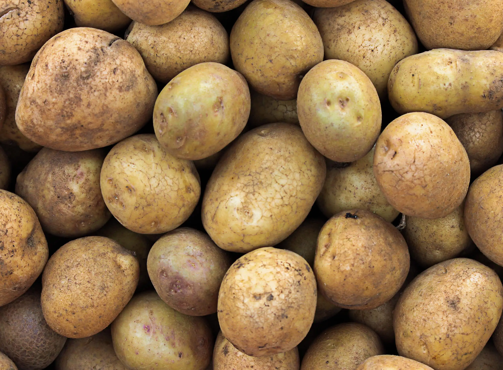
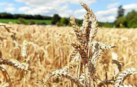
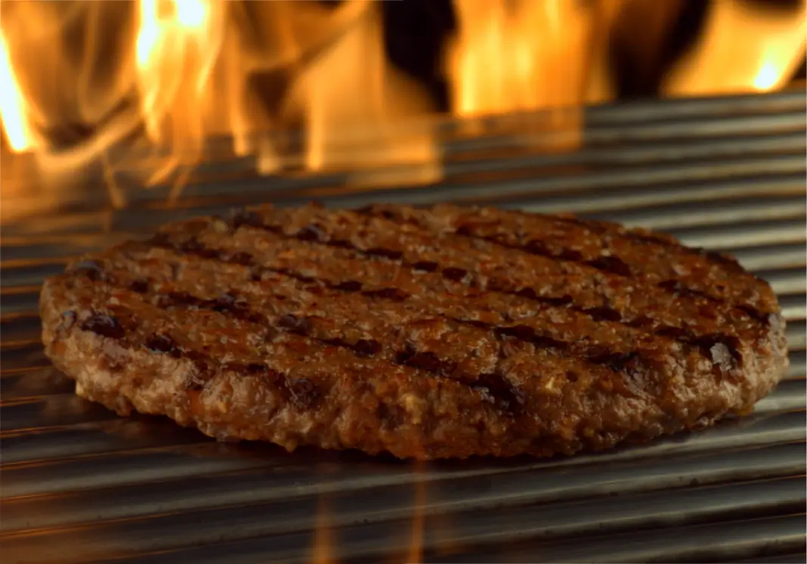

Nos Produits !
Les valeurs d'O'Mars ont toujours été la qualité, la traçabilité et le respect de l'environnement. C'est pour cela que nos produits sont choisis avec soin pour vous fournir les meilleurs tacos dans le respect de l'environnement et de l'animal :
L'amour de la frite
Nos frites sont faites avec des pommes de terre 100% martiennes et bio !

L'amour du blé
Nos tortillas et nos pains sont certifiés sans colorants ni conservateurs ! (et toujours composé à 100% de blé martien, ça ne bouge pas.)

L'amour de la viande
Notre poulet et notre boeuf sont certifiés Halal et issues de la filière "Animaux d'Avenir" garantissant une traçabilité de la viande et que l'animal n'a pas souffert durant son abattage.

L'amour de l'animal
Depuis sa création, O'Mars se place fermement contre la maltraitance animale :
C'est pour cela que nous nous engageons à faire des contrôles routiniers chez nos fournisseurs de viande dans le but de sanctionner tout abus sur les animaux.